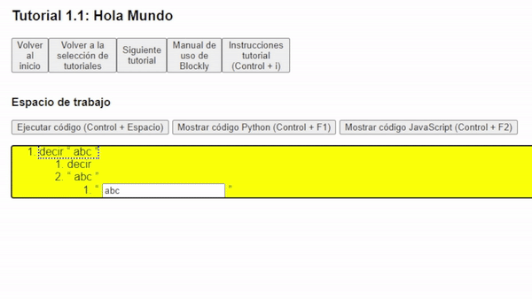
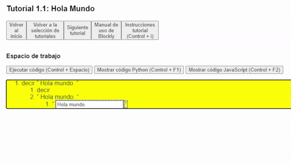

¡Bienvenido al tutorial 1.1 de Accessible Blockly!
Esta es una nueva ventana del navegador, si quieres cambiar de ventana puedes presionar Alt + Tab, y si quieres cerrar esta ventana puedes presionar Control + W.
Este y los siguientes tutoriales están diseñados para realizarse con una persona vidente que te guíe, por lo que te recomendamos que lo hagas con un amigo o familiar.
Si estás aquí es porque quieres adentrarte en el mundo de la programación, el cual puede ser muy amplio y complejo, por lo que en estos tutoriales
aprenderemos los conceptos básicos de la programación y así podrás entenderlo todo paso a paso y divertirte en el camino.
Ten en cuenta que los tutoriales están conformados por una serie de pasos que deben realizarse en la ventana anterior llamada "Tutorial Blockly", por lo que te recomendamos que
tengas ambas ventanas abiertas para que puedas seguir las instrucciones.
Así que empezaremos creando un programa que diga un mensaje en la pantalla, por lo que debes seguir los siguientes pasos:
- Primero debemos crear el grupo de bloques para que diga lo que nosotros queramos, para ello debemos presionar el botón: "Crear nuevo grupo de bloques", y luego con Tab seleccionar el botón: "decir abc" y presionar Enter.
- Ahora tenemos que movernos dentro del bloque para modificar su contenido. Esto lo hacemos ingresando al bloque que acabamos de colocar. Esto lo hacemos presionando la flecha a la derecha en el teclado, y para salir presionamos la flecha a la izquierda. Una vez dentro del bloque, podemos movernos entre los bloques internos "decir" y "abc" presionando la flecha de arriba y abajo. Ten en cuenta que existen bloques que no tienen bloques internos, por lo que no podrás ingresar a ellos, en nuestro caso el bloque "decir" no tiene bloques internos.
- Ahora solo nos queda modificar el contenido del texto que queremos que diga nuestro programa. Para ello debemos ingresar con la flecha derecha al bloque interno "abc", y luego presionar Enter para ingresar al modo de edición de texto y escribir lo que queramos y presionar Enter para salir. 
- Ahora que terminamos de modificar el contenido, podemos escuchar cómo sería la traducción de nuestro programa en el lenguaje o presionando el botón: "Mostrar código " o "Mostrar código "fuera del espacio de trabajo. Este botón lo seleccionamos con el Tab o Shift + Tab. 
- Finalmente, podemos presionar el botón: "Ejecutar código" para escuchar el resultado de nuestro programa.
- ¡Felicidades! Has creado tu primer programa. Puede que no haya sido muy divertido, pero créeme que esto es solo el inicio, presiona el botón: "Siguiente tutorial", para aprender más. Pero antes no te olvides de cerrar esta ventana presionando Control + W.